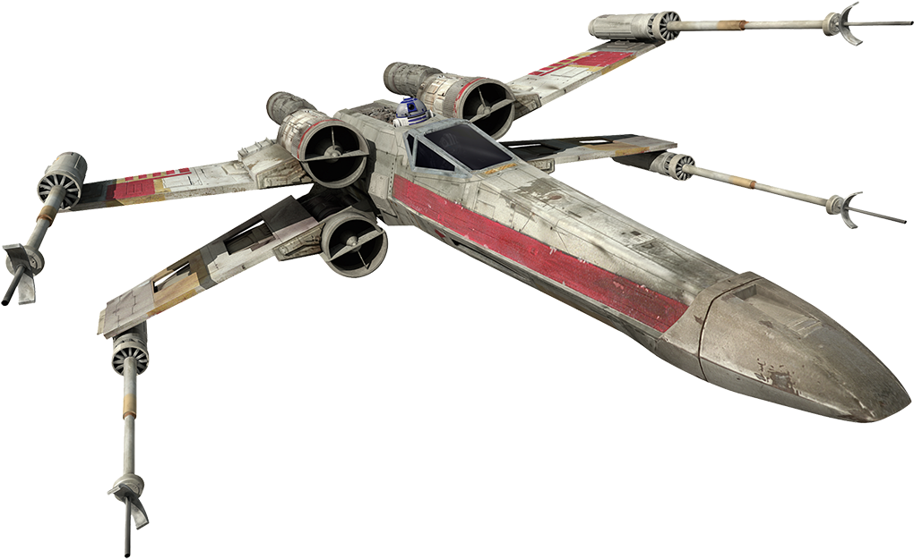
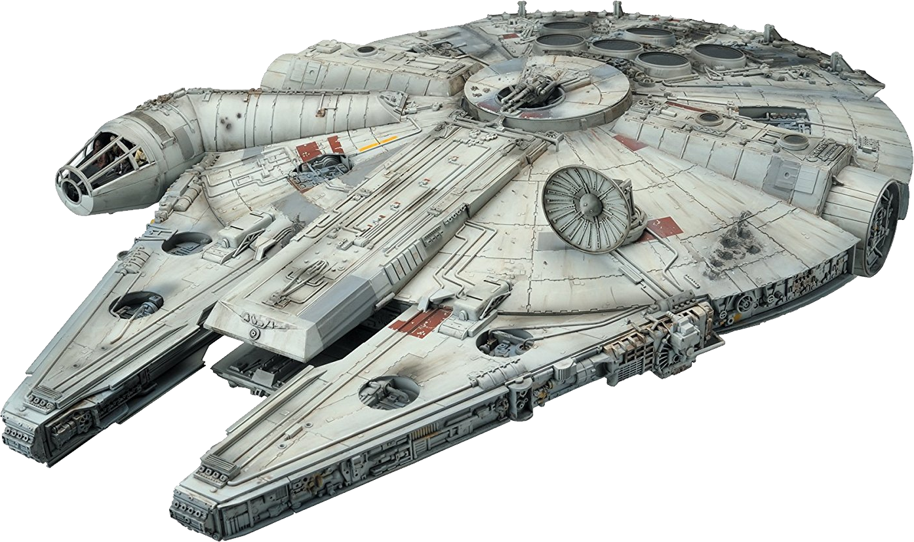
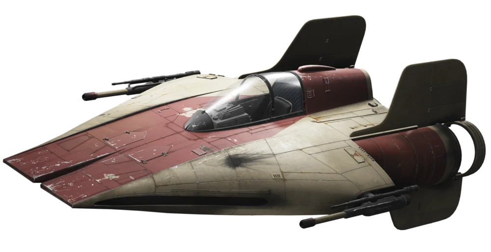
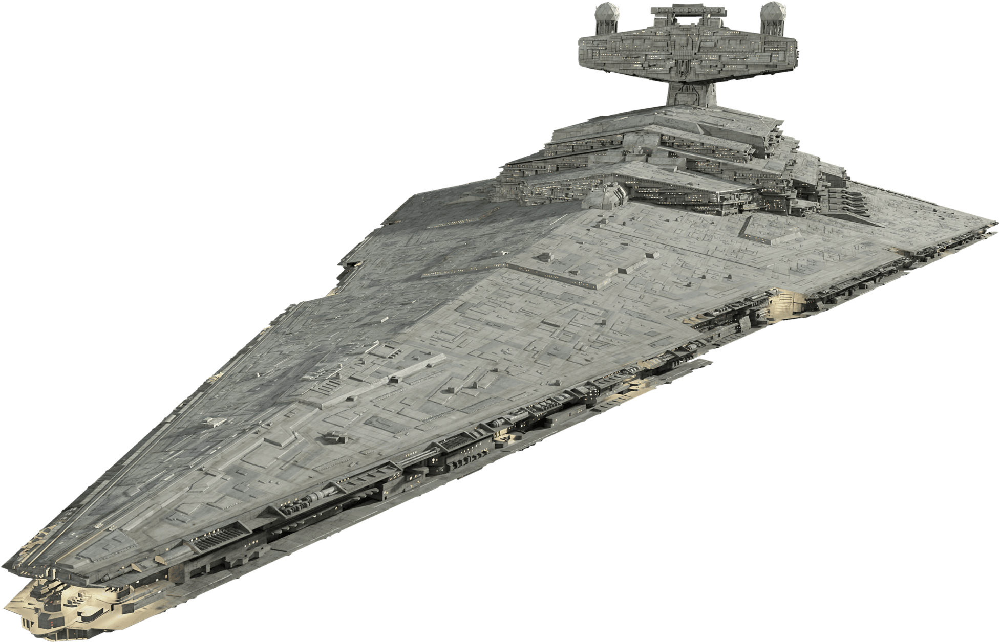
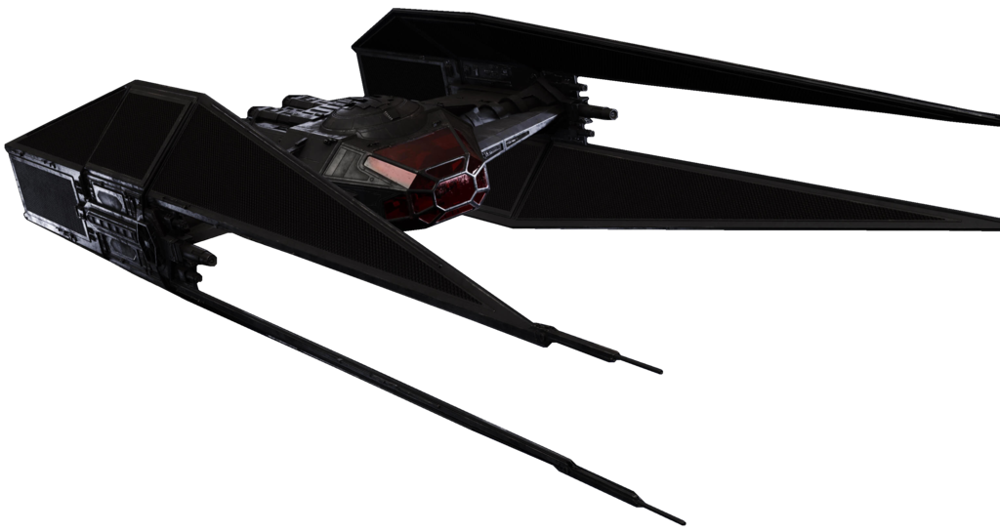

Naves estelares
- 
- 
- 
-

- 
- 
X-wing
Caças estelares X-wing eram um tipo de caça estelar marcados por suas
distintivas asas que se assemelhavam a um "X" quando em posição de ataque.
Durante a Guerra Civil Galáctica, a Aliança Rebelde usou caças T-65B X-wing
em várias batalhas, como a Batalha de Yavin e a Batalha de Endor.
Aproximadamente trinta anos depois, uma diferente variante de X-wing, o
T-70, foi usado pela Resistência, e um modelo mais avançado, o T-85, foi
usado pela Nova República.
Millennium Falcon
A Millennium Falcon foi uma cargueiro leve corelliana YT-1300 usada pelos contrabandistas Han Solo e Chewbacca durante a Guerra Civil Galáctica. Foi posse anteriormente de Lando Calrissian, quem a perdeu para Solo em um jogo de Sabacc.
RZ-1 A-wing
O Interceptador RZ-1 A-Wing foi um caça estelar utilizado pela Aliança pela Restauração da República e por células rebeldes durante a Guerra Civil Galáctica. A engenharia desses caças foi bastante apreciada pelas forças da aliança, fazendo, assim, com que fossem utilizados na Batalha de Endor. Eram equipados com mísseis de concussão, e dois canhões laterais. Por sua velocidade e fogo rápido, esse caça foi utilizado em interceptações e ataques rápidos.
TIE/LN starfighter
Os Caças TIE/LN foram fabricados pela Sistemas de Frota Sienar a pedido
do Império Galáctico, sendo uma melhoria do modelo Caça TIE.
Seu motor era um dos sistemas de propulsão mais precisos fabricados na
galáxia e, por não conter peças móveis, era de baixo valor de manutenção.
Ao contrário dos modelos TIE anteriores, o TIE/LN contava com geradores
independentes para seu motor e sistema de armas. A falta de escudos,
hiperpropulsor, e sistemas de suporte-à-vida, aliados ao design avançado
do motor, conferia ao caça uma excepcional manobrabilidade.
Destróier Estelar
Destróier Estelar era o termo usado para descrever tanto um certo tipo de naves capitais de médio porte utilizadas pela República Galáctica, o Império Galáctico, a Nova República, o Remanescentes Imperiais, a Federação Galáctica das Alianças Livres, o Aliança no exílio, o Império Fel e Império Galáctico de Darth Krayt, bem como naves de guerra fortemente armadas em geral.
TIE silencer
O caça de superioridade espacial TIE/vn, formalmente conhecido como caça de superioridade espacial TIE vendetta e apelidado de TIE silencer, ra uma variante angular dos caças estelares da linha TIE usados pela Primeira Ordem. Um produto da Sienar-Jaemus Fleet Systems, seu design agressivo e poder de fogo igualmente impressionante foram criados especificamente para uso entre os membros de elite da Primeira Ordem. Como tal, o caça foi projetado para velocidade e manuseio, embora pilotos menores ainda estivessem sobrecarregados e incapazes de manter o controle do navio ágil.